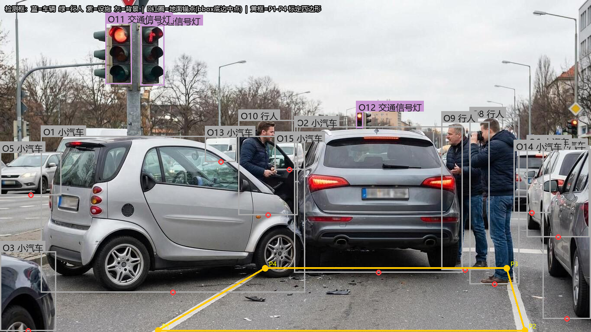
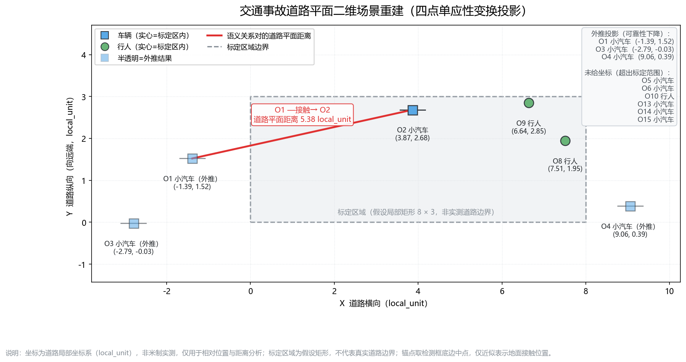

从第三阶段的融合场景（VLM 语义理解 + YOLO 目标检测 + 多源知识图谱）出发， 用四个道路控制点求解单应性变换，把交通参与者从图像像素坐标投影到统一的道路局部平面坐标系， 计算道路平面距离，重建二维道路场景，并把道路坐标写回知识图谱。
蓝=车辆、绿=行人、紫=道路交通设施、灰=背景对象；红圈是检测框底边中点（近似地面接触点）；黄色梯形是四点标定出的道路平面范围。

把每个交通参与者的地面锚点经单应性矩阵变换到道路平面后，按真实相对位置重绘的俯视图。

二维布局三维化：拖拽旋转、滚轮缩放、悬停查看详情。新增「道路局部坐标系」节点与蓝色点线（L4 道路平面坐标引用）。
| 控制点 | 角色 | 图像坐标 (u, v) | 道路坐标 (X, Y) |
|---|---|---|---|
| P1 | near_left | (365, 764) | (0.0, 0.0) |
| P2 | near_right | (1212, 764) | (8.0, 0.0) |
| P3 | far_right | (1170, 620) | (8.0, 3.0) |
| P4 | far_left | (612, 620) | (0.0, 3.0) |
| 投影状态 | 对象 | 是否给坐标 |
|---|---|---|
| 标定区内 projected | O2、O8、O9 | 是 |
| 外推 projected_extrapolated | O1、O3、O4 | 是（标注可靠性下降） |
| 超出范围 outside | O5、O6、O10、O13、O14、O15 | 否 |
| 悬空设施排除 | O7、O11、O12（信号灯） | 否 |
| 步骤 | 方法 | 产物 |
|---|---|---|
| 道路控制点标定 | 两条车道白线按行扫描取中心 + 直线拟合外推 | image_control_points.json |
| 单应性变换 | cv2.findHomography（4 点 DLT） | calibration.json、3×3 矩阵 H |
| 交通对象定位 | bbox 底边中点 → perspectiveTransform | scene_model_spatial.json |
| 空间距离分析 | 道路平面欧氏距离（15 对 + 语义关系对） | ground_distances.json |
| 二维场景重建 | matplotlib 俯视图（中文标注、状态区分） | scene_topdown.png |
| 知识图谱扩展 | 多源 MultiDiGraph + CoordinateSystem 节点 + L4 边 | knowledge_graph_spatial.json/.png/.html |